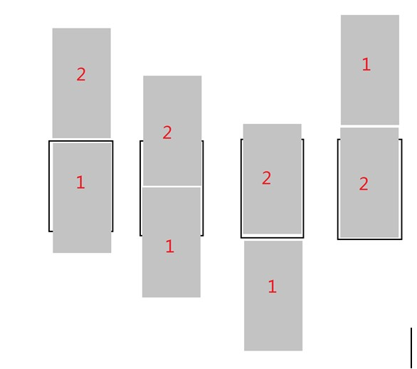

2. HTML5 新特性——WebSocket
Socket：套接字，插座，用于与远程的连接，并发送和接收数据。每个Socket对象都有只是两个接口，一个用于发送数据，一个用于接收数据。
HTTP协议：浏览器连接服务器默认使用HTTP协议——是一个典型“请求-响应”协议，有一个请求消息，才会有一个响应消息，请求与响应一一对应。有些应用，HTTP协议显示出短板，如网络聊天室、实时股票。解决办法：
“心跳请求”= AJAX + 定时器
WebSocket协议：客户端通过套接字连接到服务器上，永久连接，一方可以不停的向另一方发送消息。
提示：HTML5中提供的WebSocket对象连接服务器使用的是ws协议，必须连接支持ws协议的服务器才行——Apache Httpd不能再使用了。
HTML5WebSocket的使用方法：
var ws = new WebSocket( 'ws://127.0.0.1:9999' );
ws.onopen = function(){ //成功连接到服务器 }
ws.onclose = function(){ //与服务器断开连接 }
ws.onmessage = function(){ //接收到服务器的消息}
ws.send( 'data' );
演示：简单的聊天室
(1)编写服务器端程序（如PHP、Java、C#、NodeJS）
(2)运行服务器端程序：
c:/xampp/php/php.exe e:/socket_server.php
(3)在客户端使用HTML5WebSocket创建WS客户端
var ws = new WebSocket( 'ws://127.0.0.1:9999' );
ws.send( 'hello' ); //发送消息
ws.onmessage = function(event){ //接收消息
console.log('接收到服务器的消息:')
console.log(event.data);
}
3.HTML5阶段项目 —— 飞机大战(AircraftWar)
主要技术：Canvas绘图 + 定时器
功能分析：
游戏分为六个阶段：
(1)DOWNLOAD： 下载游戏所必需的图片
(2)READY： 就绪阶段
(3)LOADING： 加载阶段
(4)PLAY： 游戏进行阶段
(5)PAUSE： 游戏暂停阶段
(6)GAMEOVER： 结束阶段
第一阶段：DOWNLOAD知识点
连续加载33张图片，全部加载完成，进度条显示100%
var img = new Image();
img.src = 'xx.png';
img.onload = function(){
progress += 3;
drawProgress( );
}
第二阶段：READY知识点
使用一张有限长度的背景图，实现可以无限延伸的效果

游戏中让画面动起来的是定时器，所以定时器在游戏中一般称为Engine（引擎）
第三阶段：LOADING知识点
如何N个定时器周期后才执行某动作
this.counter = 0;
this.move = function(){
this.counter++;
if(this.counter%3===0){
this.index++;
}
}